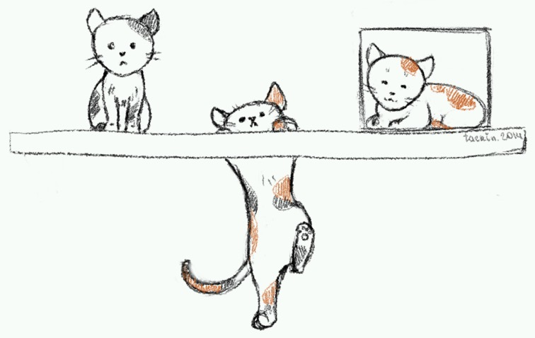

Битва за базовую линию

Когда-то наилучшим решением для инлайновых блоков были, ну, инлайн-блоки. Мне они очень нравятся за то, что с их помощью можно решить множество задач. Но и они не всемогущи. Они не умеют правильно работать с вертикальным выравниванием текста по базовой линии шрифта. Причём проблема следует уже из спецификации (см. последний абзац):
Для многострочных инлайн-блоков базовой линией является базовая линия последнего строчного бокса в обычном потоке.
Если внутри инлайн-блока нет боксов обычного потока, или же у инлайн-блока стоит
overflowотличный отvisible, то базовой линией становится нижняя граница блока.
Из-за этих проблем получится выровнять по базовой линии только однострочные блоки без заданного overflow, тогда как в любых более сложных случаях получится совсем не то, что может быть нужно.
Вот пример: все три блока имеют display: inline-block. Первый — обычный однострочный и с большим паддингом, второй — многострочный, но с меньшим размером шрифта, третий — однострочный, но с overflow: auto.

With a second line
На этом примере хорошо видно (Кстати, в последних Сафари, внезапно, блок с overflow ведёт себя не по спецификации), где у какого блока находится базовая линия.
inline-table
В CSS было одно место, где вертикальное выравнивание работало правильно — display: inline-table. Заменяем инлайн-блоки на него и получаем, казалось бы, то, что нужно:

With a second line
Но тут сразу видно: не работает overflow: auto. К тому же такому блоку нужно задавать table-layout: fixed. Получается идеально, если не нужен overflow: auto.
Пробуем флексбоксы
Можно ли сделать блок со скроллбаром, который будет правильно выравниваться? Тут на помощь спешат флексбоксы, точнее, display: inline-flex. В теории они также имеют правильное положение базовой линии, но что мы получаем на практике?

With a second line
Если вы посмотрите на этот пример в любом браузере кроме Firefox (да, даже в IE 10 и 12-й Опере), то вы видите идельно выровненные блоки.
Но в Fx блок с overflow: auto, внезапно, работает аналогично инлайн-блоку: теряет базовую линию. Грусть, печаль, разочарование, ждём исправления свежезарепорченного бага.
А если иначе?
Очень здорово, что inline-flex сам по себе правильно выравнивается относительно остальных блоков, и, если бы не баг Fx, всё было бы совсем замечательно. Но что если мы попробуем выравнивать не разные inline-flex относительно друг друга, а элементы внутри флексбокса?

With a second line
Оп! Всё работает! Вот только… Если отдельные блоки с inline-flex сами по себе переносятся на новую строку, то для элементов внутри флексбокса нам надо было бы применять flex-wrap. Но Firefox его не поддерживал до версии 28.0.
Всё вместе
Так! Но ведь если inline-flex прокидывает свою базовую линию наверх, а внутренний блок с overflow: auto также имеет правильное выравнивание даже в Firefox, то можно же совместить! Добавим в каждый блок по дополнительному элементу, да будем задавать паддинги и overflow уже на них:

With a second line
В нормальных браузерах ничего не поменялось, теперь посмотрим на Firefox… Так, блок уже выравнивается не по нижней границе, но и не по базовой линии. Хотя, измерим разницу: 10 пикселей. Это же наш паддинг! Убираем паддинги по очереди — всё выравнивается правильно, когда верхний паддинг становится равен нулю. Ага, значит Fx в этом случае всё делает почти верно, вот только всплыл новый баг. Пока мы ждём его исправления, избавимся-ка от паддинга, заменив его на псевдо-элемент:

With a second line
Идеально!
Последние штрихи
Ну ладно, не идеально. Остаётся пара мелочей, которые могут проявиться в десятом IE и в двенадцатой Опере.
В IE при заданной ширине флексбокса текст внутри него не будет врапаться, даже если не будет стоять white-space: nowrap. Довольно странный баг, обходится либо добавлением внутреннему блоку явной ширины в 100%, либо, что правильнее, -ms-flex-negative: 1.
В Опере очень похожий баг — внутренний блок не реагирует на заданную ширину, из-за чего в блоке нет переносов. Единственный способ это исправить, который я нашёл: добавить родителю flex-direction: column — так как у нас всегда только один внутренний элемент, это ни на что не повлияет.
Теперь идеально (Разве что можно ещё добавить фолбеки для старых браузеров, но это уже выходит за рамки этой статьи). Вот последний пример с разными вариантами, которые переносятся со строчки на строчку:

With a second line
Код получается таким:
.flex {
display: -ms-inline-flexbox;
display: -webkit-inline-flex;
display: inline-flex;
/* Fixing Opera issue */
flex-direction: column;
vertical-align: baseline;
}
.flex-content {
padding: 0 10px 10px;
border: 1px solid lime;
/* Fixing IE issue */
-ms-flex-negative: 1;
}
/* Fixing Fx issue */
.flex-content:before {
content: "";
display: block;
padding-top: 10px;
}
Итого
Ох уж этот Firefox! Если бы не его баги (и один баг десятого IE), то мы могли бы обойтись одним элементом для каждого инлайнового блока, который мы хотим выровнять по базовой линии. А если вам не нужен overflow отличный от visible, и вы не боитесь таблиц, то можно попробовать использовать display: inline-table.
Так, или иначе, мы победили. Теперь можно выравнивать блоки по их базовым линиям вне зависимости от их сложности, ура! Если вы хотите применять эту технику без лишних блоков, настоятельно советую пойти и проголосовать за исправление соответствующих багов в багзилле.
Опубликовано в блоге.
Спасибо Fev за иллюстрацию.